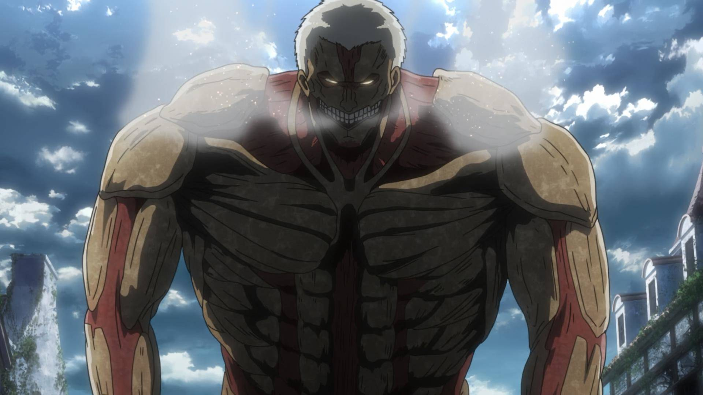

盔甲巨人
盔甲巨人（日語：鎧の巨人，英譯：Armored Titan）
身高為15公尺。全身多處覆蓋了硬質化的組織，如同穿了盔甲一樣。再生能力非常的差，遭到破壞的部位必須花費極長的時間才能修復。能夠將精神傳輸至巨人體內，因此即便破壞後頸也不一定能將其殺死。能夠剝落自身硬質化部位來大幅強化敏捷度，藉此能夠瞬間爆發出驚人的速度及破壞力，但由於自身極差的再生能力，剝落硬質化而暴露的部位如果遭受破壞就很難恢復原狀。
後來調查軍團的雷槍以及中東聯合艦隊的反巨人炮相繼問世，令盔甲巨人的銅皮鐵骨防禦能力造成打擊。
曾經持有者：

